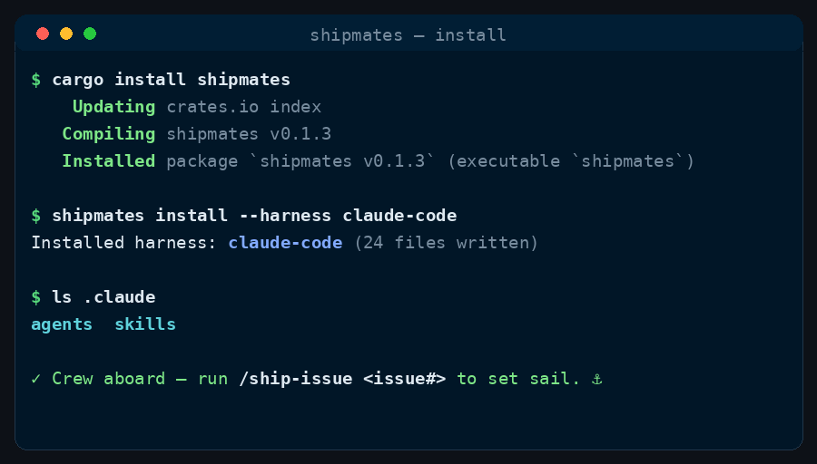

Install
Install reference
Install the CLI, then drop the crew into your harness of choice.
The installer is the shipmates CLI. Install it via Homebrew, Cargo, or the binary installer script.

1. Install the CLI
Get the shipmates CLI via Homebrew, Cargo, or a binary installer.
macOS / Linux (Homebrew)
brew install saman-mb/tap/shipmatesAnywhere (Cargo)
cargo install shipmatesBinary Installer
curl --proto '=https' --tlsv1.2 -LsSf https://github.com/saman-mb/shipmates/releases/download/vX.Y.Z/shipmates-installer.sh | sh2. Install the crew
One command drops the crew and the twelve commands into a harness's own tree.
shipmates install --harness claude-code
shipmates install --harness opencode
shipmates install --harness allInstalls into the current directory by default. The crew ships as twelve agents/*.md personas and the twelve commands as skills/<name>/SKILL.md directories (or flat commands/<name>.md on opencode), in the harness's own native tree — .claude/, .opencode/, .codex/, and so on — so the harness picks them up natively. The CLI compiles the payload from its built-in canonical sources; nothing is downloaded at install time.
On skill-only harnesses (codex, cursor, github-copilot, windsurf, zed) the crew is dropped entirely — there is no native subagent directory for them — and only the twelve skills land.
Target a specific directory
Point the install at an explicit root.
shipmates install --harness opencode --dir /path/to/projectInstalls into /path/to/project/.opencode instead of the current directory's .opencode. The harness's own tree is created if it doesn't exist.
What the installer does
- Compiles the payload from its built-in canonical sources (
commands/+crew/), rendering each command and persona into the harness's own dialect — where its agents live, what its session metadata is called, which project-instructions file it reads. - Writes the harness's own tree in the target directory —
.claude/,.opencode/,.agents/,.codex/,.cursor/,.github/,.windsurf/, or.zed/. - Emits the twelve skills whole — whatever a skill bundles comes along with its
SKILL.md— and, on claude-code, opencode and antigravity, the twelveagents/*.mdpersonas. Skill-only harnesses get the skills and nothing else. - Re-running is idempotent: files already in place are skipped.
Flags
| Flag | Default | Effect |
|---|---|---|
--harness NAME | claude-code | Which harness tree to install into. Pass all to install into every harness. |
--dir PATH | current dir | Install into an explicit target directory instead of the current one. |
Per-harness paths
Each root verified against first-party docs. All eight read skills from <root>/skills/<name>/SKILL.md.
| Harness | Tree installed | Commands land at | Subagents | First-party doc |
|---|---|---|---|---|
claude-code | .claude/ | skills/<name>/SKILL.md | agents/<name>.md | code.claude.com/docs/en/skills |
opencode | .opencode/ | commands/<name>.md | agents/<name>.md | opencode.ai/docs/commands |
github-copilot | .github/ | skills/<name>/SKILL.md | none | docs.github.com/en/copilot/concepts/agents/about-agent-skills |
codex | .codex/ | skills/<name>/SKILL.md | none | developers.openai.com/codex/build-skills |
cursor | .cursor/ | skills/<name>/SKILL.md | none | cursor.com/docs/skills |
antigravity | .agents/ | skills/<name>/SKILL.md | agents/<name>.md | antigravity.google/docs/cli/plugins |
windsurf | .windsurf/ | skills/<name>/SKILL.md | none | docs.windsurf.com/windsurf/cascade/skills |
zed | .zed/ | skills/<name>/SKILL.md | none | zed.dev/docs/ai/skills |
opencode takes the twelve as flat commands/<name>.md files rather than skill directories. That is a safety decision, not a formatting one — opencode's skills are model-invoked and its SKILL.md has no disable-model-invocation equivalent, so commands/ is what keeps the twelve user-invoked only. The reasoning is on the harness matrix.
codex and zed each install into their own root — .codex/ and .zed/ respectively. antigravity is the Antigravity CLI (agy), the successor to the retired Gemini CLI; its workspace tree is .agents/ with subagents at agents/<name>.md and skills at skills/<name>/SKILL.md.
Verify
ls .claude/agents
ls .claude/skillsYou should see twelve .md files in agents/ and twelve directories in skills/ each holding a SKILL.md — then run /ship-issue <issue#>.
For an opencode install, check the two directories it uses instead:
ls .opencode/agents
ls .opencode/commandsTwelve .md files in each. Note that no harness other than Claude Code has been verified at runtime — the payload formats were checked against each harness's parsing source and first-party docs, but no live run has confirmed that agents resolve or that /ship-issue completes. See the harness matrix.
Uninstall
rm -rf .claude/agents .claude/skillsShipmates installs whole trees — the twelve skills/<name>/ directories and the twelve agents/*.md files, all under the harness's own root. Remove those paths to uninstall. There is no manifest or backup system; nothing outside the harness tree is touched.